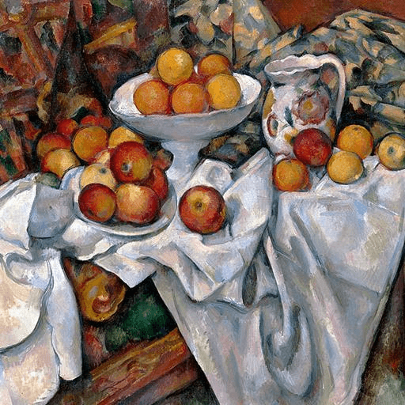

第41卦 山澤損：少一點，也好
上卦：山（☶） ・ 下卦：澤（☱）

核心意義
此刻的你被要求放下一些什麼：可能是時間、金錢、習慣或執著。減損看似損失，實則為了更大的收穫；損掉浮華換取本質、損掉急躁換取耐心。心甘情願的減損會帶來增益，勉強的犧牲則會累積怨懟。
「我以減損換取更重要的價值，讓放下成為成長的開始。」
祝福
願你在給予與捨得之間，找到讓自己心安的平衡，也因此獲得更多。
五大類別指引
感情
關係中可能需要你放下一些自我的堅持，例如習慣、面子或控制欲。為所愛的人調整不是損失，而是愛的表現；但要留意別一味犧牲到失去自己，平衡的付出才能長久。
為所愛調整自己，是愛的表現：
- 留意別犧牲到失去自己。
- 平衡的付出才能長久。
事業
目前可能需要放棄一些次要的事務或計畫，把資源集中到最重要的事情上。捨不得放下只會分散力量；判斷什麼是真正重要的，主動減損次要的，讓有限的資源發揮最大的價值。
判斷真正重要的事，集中資源：
- 主動減損次要的計畫。
- 讓有限的資源發揮最大價值。
健康
健康需要你減損一些壞習慣。熬夜、暴食、久坐或過度的壓力。放下這些看似享受的習慣並不容易，但它們正是消耗你的源頭；用更健康的選擇取代它們，身體會感謝你的減損。
減損消耗你的壞習慣：
- 用更健康的選擇取代它們。
- 放下短暫的享受，換長遠的活力。
財運
財務上可能需要減損一些支出或投資，例如不必要的消費或前景不明的項目。節儉不是匱乏，而是把資源留給真正重要的事；主動檢視並刪除多餘的花費，財務會更健康。
刪除不必要的花費與投資：
- 節儉是為真正重要的事留資源。
- 讓財務回到健康的節奏。
人際
有些人際關係或社交活動正在消耗你，此刻需要勇氣做出減法。減少虛應的場合、放下討好的習慣；把省下來的時間與心力留給真正重要的人，減損之後的關係更純粹。
減少消耗你的社交與關係：
- 放下討好，省下心力給重要的人。
- 減損之後的關係更純粹。